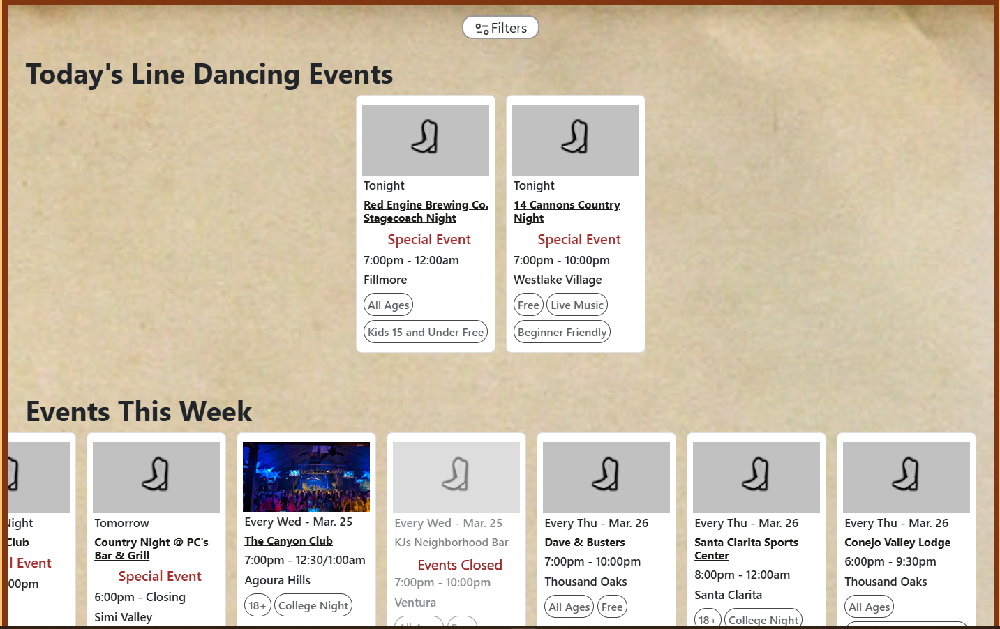

Home
Home Locations Map
Locations Map Locations Info
Locations Info Guides
Guides Articles
Articles About
AboutFor the past few months I have been reworking the line dancing calendar on this website. As many of line dancing in Ventura County include special events and different details, I wanted to create an easier way to keep track while also sharing them on this website.
The latest calendar page now contains tags and quick location info. By clicking on them, any event can be viewed with directions or links to more event info. Filters allow for finding more local events and types of events. With tags and more, I hope this helps anyone to find events!
Click Below to visit now!
